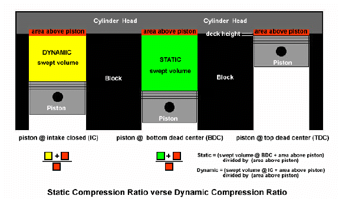

|
 |
| home | tech | search | checkout | contact | |
|
|||
|


Static & Dynamic Compression Ratios |
|||||||||||||||||||
If your building a performance motor, one of your first thoughts was probably 'How high should my Compression Ratio (C/R) be?" If so, you need to know the difference between Static Compression and Dynamic Compression, as Static compression is meaningless in itself. First, lets talk about the two types of compression ratios, Static (SCR) and Dynamic (DCR), and their differences. When most people talk about compression ratio's they are referring to an engines Static compression ratio. The Static ratio is a simple concept and represents the ratio of the swept volume of the cylinder (displacement) to the volume above the piston at top dead center (TDC). For example, if a hypothetical cylinder had a displacement of 450cc and a 50cc combustion chamber, the CR would be 500/50 (450+50/50), or 10:1. If we were to mill the head so that the volume above the piston crown was decreased to 40cc, the CR would now be 490/40 (450+40/40), or 12.25:1. Conversely, if we hogged the chamber out to 60cc, the CR would now be 510/60, or 8.5:1. Using these examples, it is easy to see how slight changes to the chamber volume dramatically effects the Static compression ratio.  Everyone knows that high performance engines typically have higher compression ratios. Why, because higher compression ratios make more hp. Higher CR's also improve fuel efficiency and throttle response. However, there are draw-backs to increasing the C/R to much. Simply put, once the C/R exceeds a given point, detonation occurs. Detonation is a bad thing, as it kills power and it kills the engine, literally. The amount of compression a given engine can handle is determined by many factors. These include combustion chamber design, cylinder head material, the use of combustion chamber coatings, and so on. Once these mechanical aspects of the engine have been fixed, the main variable is the octane of the fuel being used. Higher octane fuels offer increased resistance to detonation, or the ability to tolerate more compression. However higher octane fuels also have a draw-back, they cost more. With that in mind, you are probably wondering, how high should your C/R be? Even if you know all about your engine and have decided what octane fuel you are going to use, the question cannot be answered as phrased. Why? Because without reference to the camshaft specs (where the intake closes), talking about the Static compression ratio is useless. How is this so? Well, think about how a four stroke engine works. The power stroke has been completed and the piston is heading upwards in the cylinder. The intake valve is closed and the exhaust valve is open. As the piston rises it is helping to push the spent combustion gasses out the exhaust port. As the piston reaches TDC and starts back down, the exhaust valve closes and the intake valve opens. Fresh fuel and air are drawn into the cylinder as the piston reaches bottom dead center (BDC) and starts back up. This is the critical point as far as understanding the Dynamic Compression Ratio (DCR). As with all cam profiles, the intake valve is still open after BDC, and remains open as the piston begins its path upward. Consequently, even though the piston is rising upwards in the cylinder, compression does not actually begin until the intake valve closes (IVC). Once the intake valve closes, and only then, will the air fuel mixture begin to compress. Hence, the ratio of the cylinder volume, when the intake valve closes, over the volume above the piston at TDC, represents the Dynamic compression ratio. The Dynamic CR is what the air fuel mixture actually "sees" and it is what "counts", not the Static CR. Because the DCR is dependent upon the IVC, the cam specs have as much effect on the DCR as do the mechanical specifications of the motor. It should also be noted that the DCR is always lower than the SCR. For example: most performance street V8's, with a typical performance camshaft have a SCR of 10.0-12.0:1, which normally results in a DCR in the range of 8.0:1 to 8.5:1. If the DCR was any higher, it could result in detonation problems if and when regular pump gas is used. As such, most performance street V8's require premium gas, which has a higher octane rating. The Dynamic Compression Ratio (DCR) is derived from measured and/or calculated values that are the actual dimensions of the engine. As such, the Static and Dynamic Compression Ratios are determined when the engine is built and never change. That is unless variable cam timing is used. Variable cam timing, which is controlled by the ECU, changes the point where the intake valve closes, which in turn changes the Dynamic Compression Ratio. It is known that most gas engines make the best power with a DCR between 7.5 and 8.5 on 91 or better octane. For example; a 355ci engine with a 9:1 static CR using a 252 cam (110 LSA, 106 ICL) has an intake closing point of 52º ABDC, which results in a DCR of 7.93. The same 355ci engine with a 292 cam (having an intake closing point of 72º ABDC) has a DCR of 6.87, over a full ratio lower. Hence the larger cam's DCR falls outside the acceptable range. It would have markedly less torque at lower RPM, primarily due to low cylinder pressures, and a substantial amount of reversion back into the intake track. Higher RPM power would be down as well, as the engine would not be able to fully utilize the extra A/F mixture provided by the ramming effect of the late intake closing. To bring the 292 cam's DCR up to the desirable 7.5 to 8.5:1 for a street engine, the SCR needs to be raised to around 10:1 to 11.25:1. This lowering of the compression ratio, due to the late closing of the intake valve, is the primary reason cam manufactures specify a higher static compression ratio for their larger cams: to get the running or dynamic C/R into the proper range. Unless you actually measure the engine specs (CC the chambers and pistons in the bores), these calculations are estimations, at best. Treat them as such. The published volumes for heads and pistons can, and do, vary (crankshafts and rods, too). If you are building an engine with an 8.5 DCR or higher, these measurements are essential, or you could be building another motor. As such, it is best to error on the low side. The information given here should be used as a guideline only. There are no hard and fast rules. It is up to you, the engine builder, to determine the correct build of your engine. And remember, unless accurate measurements are taken, calculations are only approximations. We won't go into all the calculations required, as there are numerous programs available for handling that chore. We recommend purchasing one of these programs, if you are going to select the camshaft profile, and CR without the assistance of a trained professional. All cam manufactures are more than happy to assist you in selecting a cam profile if your not sure. However, with the available programs, it is actually quite simple. Or you can send the information to us and we will run the numbers for you, but this does not allow you to play with the various options and setups, as you could if you had your own program. Virtual Engine Dyno's Camshaft Utility Program, which calculates Dynamic CR, is only $20 bucks and can be downloaded instantly. Their basic Engine Dyno program is $90 bucks, which includes the Cam Utility program. Other related articles: Selecting the right Camshaft, Understanding Lobe Centers, Understanding Camshaft specifications. The links below are for some charts I made up, using three different setups. One for a 200ci with a zero deck height, one for a 250ci with a zero deck height, and one for a 250ci with a .120 deck height.
The ideal DCR range for a performance motor on pump gas is 7.5 to 8.5
Now, lets use the charts to build a 200ci that is used as a daily driver. As such, we prefer good economy with low to mid range performance, using low octane fuel. Were also concerned about building the motor within a budget, so were going to maintain the log cylinder head with the 1V carb, maybe upgrading to a 2V carb. We'll also use the stock C4 tranny and torque converter, and the current 2:80 rear gears. Since we are concerned about economy, we will be using the stock dished pistons if possible. However, in this case, the machine shop has inspected the motor and informed us that 20 over pistons are required. That being said, we'll stay with dished pistons to optimize our mileage, and zero deck the block for better quench characteristic and a bit more compression. Next, using the cam specs, we'll select a short duration cam profile as they work best for low compression motors (for economy). But not to short as we also want one that allows more mid range performance for a little more get up and go. Looking at the specs, our best choice would be the 264 single pattern cam. But do we go with a 112 or a 110 lobe center? A 112 lobe center has the intake closing at 64 degrees and offers a smoother idle, while the 110 lobe center closes at 62 degrees and offers more low end grunt and a little bit of a lope. So which do we use? This is where the dynamic compression ratio comes into play. Lets look at the chart for an approximate comparison. Since we are building a mild performance motor, the chart will give us a pretty good idea. However, if we were building a high performance motor I would recommend purchasing a Cam Utility program for calculating precise numbers, rather than using approximations. With our sample motor, we want to use the chart for dished pistons, with a .020 over bore, and zero deck height. Since we are building a motor for the best possible economy, and want to use low octane gas, we need to stay in the green ranges, or around 7.3 to 7.5 for the best performance. But wait, what about chamber size? We know our stock head has 62cc chambers, but looking at the chart, we see that the chambers are to big for the cam profile we selected. With the intake closing at 62 or 64 degrees (depending on the lobe center) and 62cc chambers, our DCR will be to low for good performance. No problem. Lets move up the charts, looking for a chamber size that has the correct DCR and valve timing for the cam profile we selected. Remember, less static compression is better for an economy build, and that you want to leave as much meat on the cylinder head as possible, leaving room for another rebuild down the road. Therefore you want to find the first match with the IVC (intake closing) between 60-65 degrees, and the DCR in the 7-3 to 7.5 range. Looking at the chart, it looks like a 52cc chamber is the first match, with the IVC at 62 degrees. Or a 50cc chamber with the IVC at 64 degrees. A 52cc chamber gives us a 9.06 SCR and an approximate 7.4 DCR using the 264 cam with a 110* lobe center. The 50cc chambers give us a 9.31 SCR and an approximate 7.5 DCR using the 264 cam with a 112 lobe center. Therefore I would recommend using the 264 cam with a 112 lobe center. I would also install the cam with 4 degrees of advance, to move the power band downward. This will give the motor a little more bottom end power and will get you out of the hole better with the current 2:80 gear set. Well that's it. All you need to do at this point, is instruct the machine shop to mill the head for 52cc chambers. OK, lets try one more. This one will be a 200ci that is used for occasional cruising, but see's the drag strip on a regular basis. We'll be using 93 octane fuel, the new aluminum cylinder head, flat top pistons, .060 over, zero deck height, and a Fepro gasket. In this case, we already have the cam from a previous build, which is a 274 with a 110 lobe center. What we want to know, is what size chamber will give us the best results, keeping the DCR below 8.4 for a reliable motor with no detonation issues on 93 octane fuel. Looking at the charts, we see that a 52cc chamber will give us a Static ratio of 10.17 and a Dynamic ratio of 8.42 if the intake closed at 60 degrees. With our existing cam, the intake closes at 62 degrees (rather than 60), so it should work out just about right. We need to mill our new aluminum head for 52cc chambers, which should be perfect for our build.
|
|||||||||||||||||||

[ home ]
[ index ] [ products ]
[ search ]
[ checkout ]
Copyright 2012 - Classic Inlines - All Rights Reserved